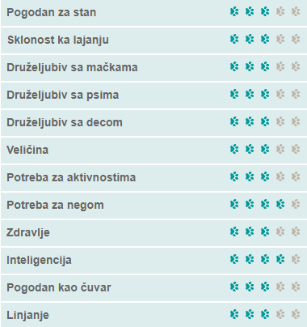
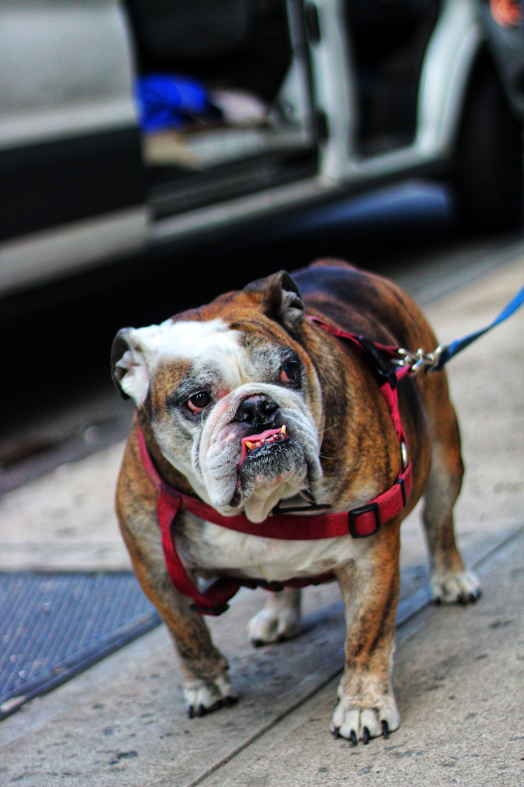
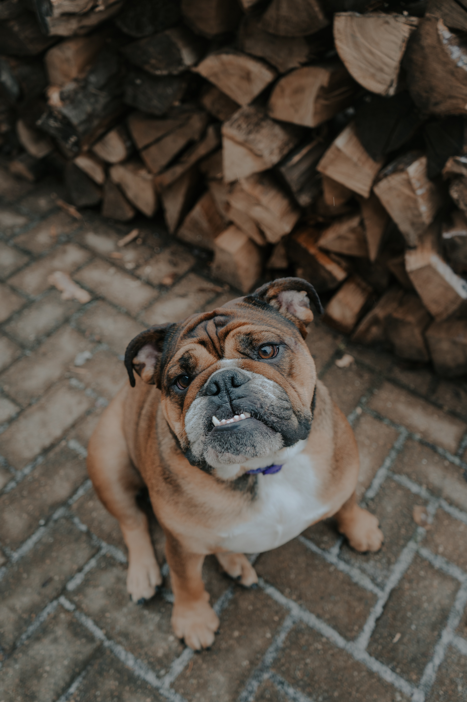
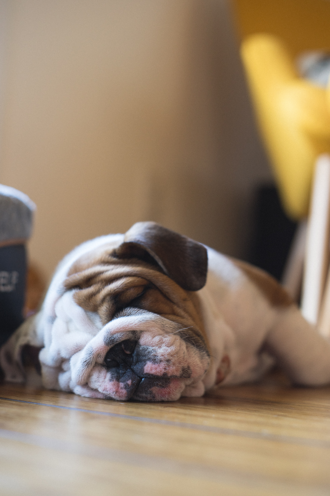

Булдог

- Карактеристике
- Послушан, осећајан, нежан и весео пас. Веома је привржен породици у којој живи. Делује агресивно, али је веома племенит и пријатељски настројен.
- Изглед
- Средње велики пас мишићавог и здепастог тела. Глава му је широка са избаченом доњом вилицом, што им дајте груб и љут изглед. Длака је кратка, густ и равна, а може бити бела, црвено-црна, бледо жута или тиграста.
- Дресура
- Интелигентни су и спремни да удовоље власнику. Међутим булдог зна да буде тврдоглав, а понекад може покуша да врши доминацију над својим власницима. Потребна им је рана социјализација јер штенци који се нису навикли и дружили са другим псима могу касније постати агресивни према њима.
- Нега
- Доста је лењ, али ради његовог здравља неопходно му је свакодневно кретање и вежба. Одговара му живот у стану, али доста балави и гласно хрче. Повремено четкање и чешљање се препоручује, као и чишћење набора између коже. Умерено се лиња.
- Здравље
- Здравствени проблеми који се могу јавити код ове расе су: Дисплазија кука, срчани проблеми, рак, респираторни проблем, алергије.
- Животни век
- 8-12 година.



Кликните за почетну страницу
Ако вам се свидео баш овакав пас, можете погледати огласе за његову продају кликом на овај текст.